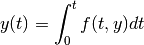

At the highest level, RoadRunner generates and solves ODE (ordinary differential equation) problem of the form

where the function :math: f(t) is generated from the SBML document.
As this is numerically integrated, it is impossible to specify a time step and other integration parameters that are ideal for all functions. As a general rule for numeric stability, if you have a periodic function, you need a time step that is approximately 1/12 the period.
There are a number of tuning parameters that allows one to fine tune the numeric integration to their function at hand. We have chosen a set of precision values that we feel are a good balance between performance and numeric stability for most systems. However, one may frequently encounter stiffer systems which require tighter tolerances . Note that specifying very tight tolerances will drastically decrease performance.
Another parameter which is a significant role in numeric stability and performance is the initial time step. If no initial time step is provided (SimulateOptions.initialTimeStep < 0, the default value), the internal integrator (defaults to CVODE) will estimate an initial time step based on total time span and and other numeric attributes calculated from the system. If the estimated initial time step is too large, then a significant amount of time will be spent by the integrator adjusting it down to a stable value. If the initial time step is too small, the integrator will waste needless steps re-evaluating the system function. As we use variable time step integrators, the time step will increase if the function is relatively smooth, however, by the time the time step has been increased, the simulation time may be over.
If one encounters exceptions from the integrator, the first thing that one should try is specifying an initial time step and tighter absolute and relative tolerances.
All of the parameters to tune the integration are on the SimulateOptions object. This object may either be accessed directly off the RoadRunner object, or be passed into RoadRunner.simulate or RoadRunner.integrate as optional parameter. Setting the values may be performed as:
r=roadrunner.RoadRunner("mymodel.xml")
r.simulateOptions.absolute = 5e-10
r.simulateOptions.initialTimeStep = 0.00001
r.integrate(0,10)
This will specify the absolute precision and initial time step, and will integrate the system from time 0 to 10. The internal integrator will take many time steps before it reaches time 10.
The same SimulateOptions values control the integrator in all three of the integration RoadRunner methods, RoadRunner.simulate, RoadRunner.integrate and its’ synonym, RoadRunner.oneStep.
The integration tuning parameters are
| SimulateOptions.STIFF | int(x[, base]) -> integer |
| SimulateOptions.MULTI_STEP | int(x[, base]) -> integer |
| SimulateOptions.integratorFlags | A bitfield which may contain the following options. |
| SimulateOptions.steps | The number of steps at which the output is sampled. |
| SimulateOptions.start | The start time of the simulation time-series data. |
| SimulateOptions.duration | The duration of the simulation run, in the model’s units of time. |
| SimulateOptions.absolute | A number representing the absolute difference permitted for the integrator |
| SimulateOptions.relative | A float-point number representing the relative difference permitted. |
| SimulateOptions.initialTimeStep | A user specified initial time step. |
| SimulateOptions.minimumTimeStep | Specify the minimum time step that the internal integrator will use. |
| SimulateOptions.maximumTimeStep | Specify the maximum time step size that the internal integrator will use. |
| SimulateOptions.maximumNumSteps | Specify the maximum number of steps the internal integrator will use before reaching the user specified time span. |